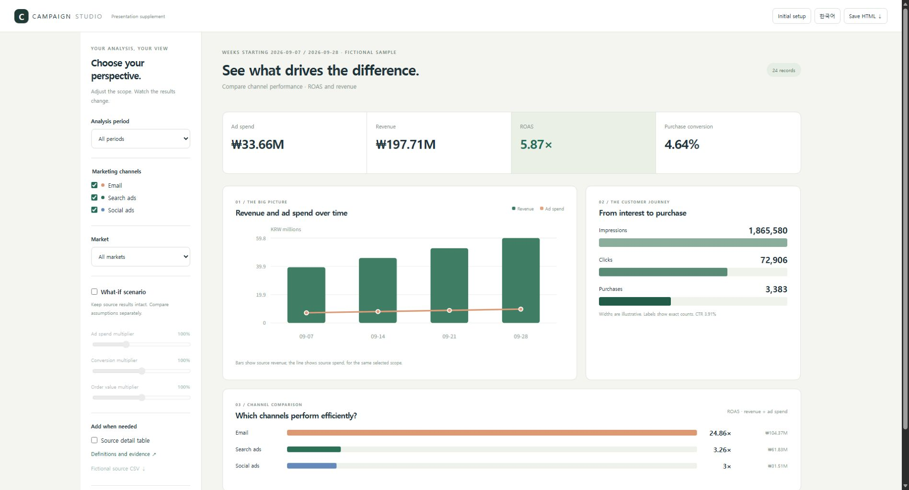

HTML PRESENTATIONOpen full size ↗
EARLY PREVIEW · FREE FOR INTERNAL USE
Motion you can pause.
A story you can explain.
Let the story play,
then pause when it is time to explain.
Read your slides. Shape the narrative.
An agent skill for interactive HTML presentations.
Claude Code and Codex fictional fixture checked / verify your own files
01 / TRY THE MOTION
Delivery. Marketing. Warehousing. In motion.
24 seconds each · choose a story
Play the flow or explain it chapter by chapter.
When routes fall into place
Orders → regions → routes → delivery. Tangled lines become three vehicle routes.
From attention to conversion
Reach → engagement → purchase → return. Follow the journey into a retention loop.
How a warehouse moves
Receiving → storage → picking → shipping. Isometric racks and moving parcels explain the flow.
These are original fictional scenarios, not measured optimization, campaign or facility results, or automatic PPT conversions. This page does not upload your files or send them to AI.
Play the flow Continuous motionPause to explain Chapter controls and seekingKeep it portable One offline HTML file
SUPPORTING HTML / OPTIONAL
Open the evidence inside your presentation.
Marketing analysis, included as supporting HTML.
Controls and slicers on the left. Visual results on the right.
Start with the basics, then add the analysis you need.

24 original fictional campaign records, not measured results or arbitrary Excel conversion. Close the supporting material to return to the same presentation step.
02 / THE AGENT WORKFLOW
Before the design,
decide what to explain.
AI authoring needs a clear process, too.
The skill makes that process explicit.
- 01
Read
Read slide text, tables and notes, and preserve the source evidence.
- 02
Direct
Propose the message, narrative order and meaningful motion.
- 03
Build
Build the reviewed outline into a step-by-step HTML presentation.
- 04
Refine
Check figures, overflow and navigation, then refine.
Fictional conversion and revision checked in both CLIs. Marketing supporting HTML was exercised in Edge. See the verification record for scope and limits.
03 / MAKE IT YOURS
Start with the right questions.
Choose your settings to create a starting prompt.
Use it with your PPT in the AI environment where you installed the skill.
YOUR STARTING PROMPT
Generated only in this browser.
04 / USE THE SKILL
Continue in the AI
you already use.
The skill and tools are free for personal and internal business use.
AI subscriptions and API fees follow your provider’s terms.
Install from GitHub
git clone https://github.com/Chris-yoo80/ppt-to-html-agent.gitSee docs/install.md in the repository for Claude Code and Codex installation paths and examples. The fictional CLI fixture was checked; verify your own source files separately.
Download skill ZIP ↓Finding this useful? Give it a ⭐
⭐ Star on GitHub ↗Sign in on GitHub and click Star at the top of the repository. Stars are optional; downloads are available right away.Your star encourages the next update.
View source on GitHub ↗
GOOD TO KNOW
A few things to know.
Does this website convert PPT files?
This website introduces the project, plays examples and builds a starting prompt. Conversion happens in your AI environment with the skill installed.
Does it reproduce the original slide layout?
It redesigns the narrative and screens around your content. Pixel-perfect reconstruction is not supported. The basic extractor reads PPTX text, tables and notes; image OCR and chart-data interpretation are not included.
Can it export video files?
The first version focuses on point, line and plane motion inside HTML. MP4 export is deferred.
What is published on GitHub?
Only general authoring instructions, code and original fictional examples are published. Your actual slides, notes and embedded materials do not automatically become public examples.